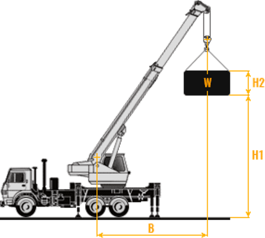
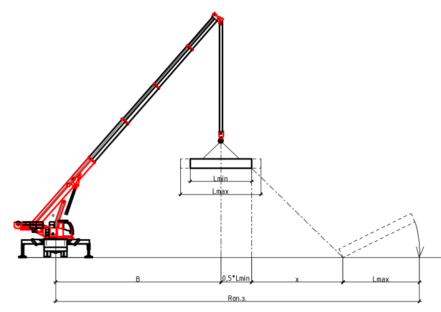
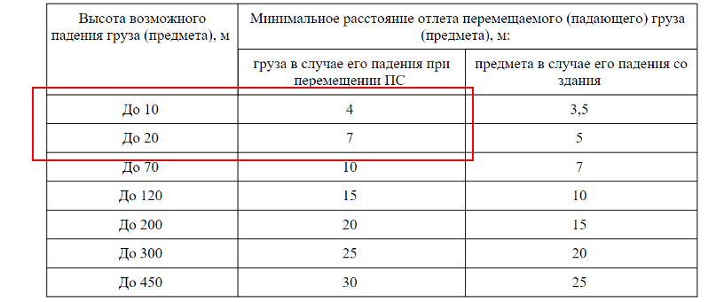
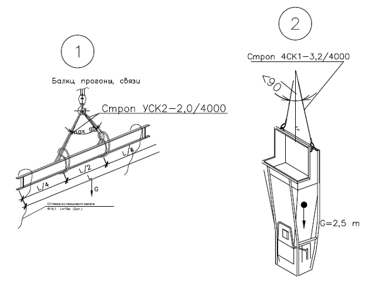
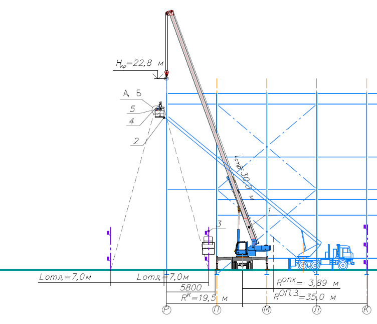
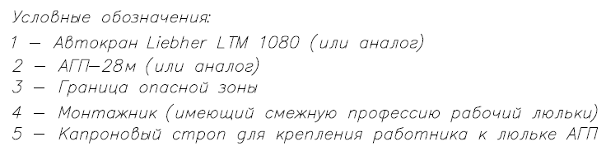
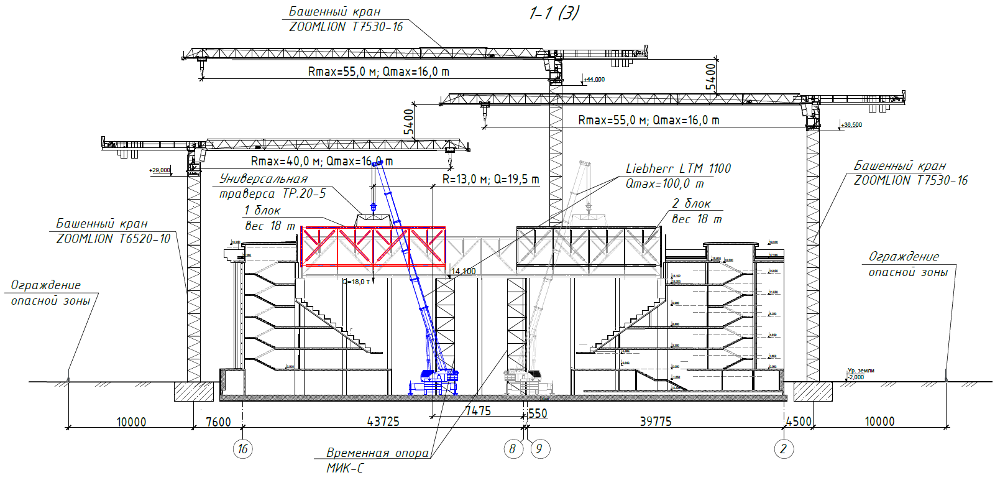

Оформляем проект производства работ подъемными сооружениями (ППРпс, ППРк)

В этом уроке структурируем знания о ППРпс. Вы поймете, как документ влияет на сроки, безопасность и стоимость работ с подъемными сооружениями. Преподаватель подробно проанализирует каждый раздел ППРпс, чтобы вы смогли самостоятельно оформить этот документ без ошибок.
Начнем урок с основного понятия.
Что такое ППРпс
Проект производства работ с применением подъемных сооружений (ППРпс) – организационно-технологический документ, который разрабатывают для работ с применением подъемных сооружений. Документ содержит требования по безопасному производству работ.
Все еще встречают наименование «Проект производства работ кранами (ППРк)», но правильно называть такой документ ППРпс (Приказ Ростехнадзора от 26.11.2020 №461).
Когда оформляют ППРпс
Требования к ППРпс прописали в приказе Ростехнадзора от 26.11.2020 №461 (ФНП), они касаются опасных производственных объектов (ОПО), где применяют подъемные сооружения (ПС). Исключение: ПС, предусмотренные п.3 ФНП.
К ОПО относят объекты, на которых используют грузоподъемные механизмы.
Исключение (приложение 1 п. 3 ФЗ от 21.07.1997 №116-ФЗ):
- лифты,
- подъемные платформы для инвалидов.
ППРпс нужен, когда выполняют:
- строительно-монтажные работы,
- демонтажные работы,
- реконструкции,
- капитальный ремонт,
- другие работы с использованием подъемных сооружений.
Эксперты Высшей инженерной школы подготовили презентацию основных видов подъемных сооружений, которую вы можете использовать в работе.
Материал к уроку (PDF)
Основные виды подъемных сооружений
PDF получен с исходной страницы. Поля для названия организации и других персональных данных оставлены пустыми.
Когда подъемные сооружения используют при погрузочно-разгрузочных работах и складировании грузов, разрабатывать ППРпс не нужно. Достаточно технологической карты на погрузочно-разгрузочные работы.
Кто вправе разрабатывать ППРпс
ППРпс разрабатывают специалисты, у которых есть опыт, документы, подтверждающие, что они прошли профессиональное обучение (п.10 и п.19 приказа Ростехнадзора от 26.11.2020 N 461 (ФНП)).
Например, для соответствующих функций могут потребоваться повышение квалификации по разработке ППРпс и аттестация на знание требований промышленной безопасности. Область аттестации определяйте по действующему перечню, утверждённому приказом Ростехнадзора от 09.08.2023 № 285, с учётом вида работ и применяемых подъёмных сооружений.
ППРпс разрабатывает организация, которая выполняет работы, подрядчик.
Специальная лицензия или членство в СРО у организации-разработчика не требуется.
Кто утверждает и согласовывает ППРпс
ППРпс утверждает организация, которая эксплуатирует ПС.
ППРпс согласовывают со всеми заинтересованными лицами и службами:
- застройщиком, техническим заказчиком;
- лицом, осуществляющим подготовку проектной документации;
- эксплуатирующей организацией;
- другими
ППРпс на работу в охранной зоне воздушных линий электропередач согласуют с владельцем линий (п. 107 ФНП).
ППРпс на подъем и транспортировку людей с применением ПС согласуют с территориальными органами Федеральной службой по экологическому, технологическому и атомному надзору, кроме случаев аварийной транспортировки людей (п. 235 ФНП).
Лица, которые утверждают или согласовывают ППРпс, проходят аттестацию в сфере промышленной безопасности ОПО.
Требования к составу ППРпс
Состав ППРпс не регламентирован. Но есть требования ФНП, где определяют информацию, которую содержит ППРпс (п. 156-159 ФНП).
У заказчиков бывают свои требования к составу ППРпс, которые утверждают внутренними нормативными документами. Рекомендуем перед началом работы с ППРпс уточнить, есть ли такие требования, и разрабатывать ППРпс по ним.
Если на объекте нет особых требований, пользуйтесь типовым составом ППРпс. Помните, что ППРпс адаптируют под объект.
Эксперты Высшей инженерной школы подготовили памятку с типовым составом ППРпс, которую вы можете использовать в работе.
Материал к уроку (PDF)
Типовой состав ППРпс
PDF получен с исходной страницы. Поля для названия организации и других персональных данных оставлены пустыми.
Рассмотрим подробнее содержание разделов ППРпс.
Раздел 1. Общие сведения
Указываете, где применяете документ и с какой целью. Также можно указать краткие характеристики объекта. Например, местоположение объекта, конструктивно-планировочные решения и другие.
Раздел 2. Указания по производству работ
Подготовительные работы
Описываете организационно-подготовительные мероприятия, которые выполняют до начала строительства. Например, обустройство строительной площадки – ограждения, временные проезды, места складирования и другие.
Подбор подъемных сооружений
Кран подбирают по трем основным параметрам: грузоподъемности, вылету и высоте подъема, а в отдельных случаях и по глубине опускания.

Грузоподъемность крана подбирают с учетом веса поднимаемого груза и веса грузозахватных приспособлений и тары. При этом учитывают подачу груза в наиболее отдаленное положение.
Перечень подъемных сооружений и их технические характеристики
В этом подразделе перечисляют ПС и указывают их грузовые и технические характеристики. Состав подраздела:
- таблица с перечнем ПС;
- технические характеристики ПС (грузоподъемность, наибольшая высота подъема, максимальный вылет, длина стрелы, габаритные размеры);
- график грузовысотных характеристик ПС.
Рекомендуем в тексте ППРпс указывать, что разрешается применять ПС других марок при технических характеристиках не ниже характеристик ПС, используемых ППРпс. Это позволит заменить технику на аналогичную, если нужную марку крана найти не удалось.
Пуск в работу подъемных сооружений (п. 135-145 ФНП)
Описываете процесс пуска ПС в работу, а также указываете на необходимость поставить ПС на учет в органах Ростехнадзора.
Определение границ опасных зон
Опасная зона работы крана – зона, в которой возможно падение груза при его перемещении краном.
Опасную зону работы крана определяют по формуле:
Rоп.з.=В+0.5* Lmin+ Lmax+х,
где В – максимальный вылет стрелы крана или рабочая зона работы крана, м;
Lmin – минимальный габарит груза, м;
Lmax – максимальный габарит груза, м;
х – величина отлета груза (определяется согласно таблице 1 приложения 1 ФНП).

Пример 1.
Как рассчитать опасную зону работы крана
Высота подъема: 12,5м,
Минимальный габарит груза: 2,6 м,
Максимальный габарит груза: 26,1 м (длина фермы),
Максимальный вылет стрелы крана: 19,2 м.
Величину отлета груза определяем по таблице в зависимости от высоты подъема методом интерполяции:

Величина отлета груза в случае его падения при перемещении ПС: 4,75 м.
Rоп.з.=19,2+0.5* 2,6+ 26,1+4,75=51,35м.

Технология выполнения работ
В подразделе указывают порядок производства работ на объекте.
Когда заполняете раздел привязывайтесь к объекту, не описывайте действия общими словами.
Пример 2.
Наполнение раздела:
- технологическая последовательность работ;
- детальное описание производства работ с применением ПС для каждой операции
Когда описываете последовательность работ по монтажу сцены, указывайте:
- монтаж колонн,
- монтаж стоек от оси Д к оси А,
- монтаж ферм от оси Д к оси А,
- монтаж покрытия сцены из триплекса.
До начала монтажа металлоконструкций выполняют подготовительные работы:
- перевезти и складировать металлоконструкции на приобъектном складе;
- отобрать металлоконструкции и соединительные детали, прошедшие входной контроль;
- нанести по четырем граням на уровне верхней плоскости фундаментов риски установочных осей в соответствии с проектом;
- нанести риски установочных, продольных осей на боковых гранях колонн, на уровне низа колонн. Риски наносятся карандашом или маркером. Недопустимо нанесение царапин или надрезов на поверхности колонн;
- доставить в зону монтажа необходимые монтажные средства, приспособления и инструменты.
Основные операции при монтаже колонн и стоек:
- строповка,
- подъем,
- наводка на опоры,
- выверка и закрепление.
Стропуют стойки и колонны за верхний конец по схеме строповки. Монтажники при монтаже стоек стоят на передвижных вышках-турах. При производстве работ на высоте применяют страховочные привязи.
После проверки надежности строповки стойку устанавливает звено из четырех рабочих. Звеньевой подает сигнал о подъеме стойки (колонны). На высоте 30-40 см над проектным положением стойки монтажники направляют стойку в проектное положение, а машинист плавно опускает ее.
Два монтажника придерживают стойку, а два других обеспечивают совмещение в плане осевых рисок на стойки с рисками, нанесенными на закладных элементах, что ставит стойку в проектное положение, и ее закрепляют при помощи сварки.
Стропы снимают со стойки (колонны) только после того, как ее закрепляют.
Технологическая схема последовательности монтажа ферм:
- укрупнительная сборка фермы Ф-5 (ось Д) с прогонами. Сборку производят вдоль оси Д;
- подготовка опорных элементов фермы Ф-5;
- строповка фермы Ф-5, закрепление оттяжек;
- подъем фермы на 50 см для проверки надежности строповки;
перемещение фермы Ф-5 краном к месту монтажа; - выверка и монтаж. Стропы не отцеплять до полного закрепления фермы, удерживать краном;
- монтаж следующей фермы Ф-4 (ось Г) в той же последовательности;
- монтаж следующей фермы Ф-3 (ось В) в той же последовательности;
- монтаж следующей фермы Ф-2 (ось Б) в той же последовательности;
- монтаж следующей фермы Ф-1 (ось А) в той же последовательности;
- сдача ферм в эксплуатацию по акту.
Детально описывать всю технологию производства работ в ППРпс не нужно. Описывайте действия, связанные с работой ПС.
Подробную технологию производства работ можно описать в технологических картах (ТК) по этим видам работ и приложить к ППРпс. Например, ТК на сварочные работы, ТК на устройство монолитных конструкцию и другие.
Требования к персоналу по обеспечению безопасных условий работы
Рекомендуем наполнять подраздела так:
- список рабочих кадров;
- требования к персоналу по возрасту, прохождению обучений, аттестации и другие;
- необходимость средств индивидуальной и коллективной защиты.
В подразделах «2.8 Указания стропальщику» и «2.9 Указания крановщику ПС» описывают правила для стропальщиков и крановщиков:
- перед началом работ,
- во время работы,
- при подъеме и перемещении груза,
- перед опусканием груза.
Также указывают их основные обязанности.
Подразделе «2.9 Указания по строповке» описывают:
- требования к строповке грузов,
- требования к эксплуатации и проверке грузозахватных приспособлений и тары,
Также в подразделе приводят схемы строповок грузов для конкретного объекта.
Схемы строповок можно вынести в графическую часть ППРпс.
При строповке конструкции двумя стропами или стропом с несколькими ветвями угол между стропами должен быть не меньше 90°.
| 1 | Стропы: | |
| 1.1 | Текстильные | |
| 1.2 | Цепные | |
| 1.3 | Канатные | |
| 2 | Механические захваты | |
| 3 | Траверсы (для габаритных и длинномерных грузов) | |
| 4 | Мягкие полотенца (для монтажа трубопроводов) |
Что указывают на схемах строповки
- груз;
- грузозахватное приспособление, закрепленное в определенных местах к грузу;
- вес груза;
- угол между стропами при строповке двумя стропами или стропом с несколькими ветвями.
Также к схемам строповки формируют таблицу масс перемещаемых грузов и применяемых грузозахватных приспособлений.
| Наименование элементов | Марка | Макс.масса, т | № схемы строповки | Грузозахватные приспособления | ||||
| Наим. | Характеристики | Кол-во | ||||||
| Q, т | L, мм | P, кг | ||||||
| Балка | Б-1 | 2,95 | 1 | УСК2-2,0/4000 | 4,0 | 4000 | 3,0 | 2 |
| Бункер для бетона | 2,5 | 2 | 4СК1-3,2/4000 | 3,2 | 4000 | 18,3 | 1 | |

В подразделе «2.11 Указания по складированию» определяют мероприятия по складированию материалов на строительной площадке, приводят схемы складирования.
В графической части на стройгенплане обозначают места и габаритные размеры складирования грузов, подъездные пути.
Раздел 3. Мероприятия по охране труда, пожарной и экологической безопасности
В разделе указывают:
| Требования к грузозахватным приспособлениям | П. 215-234 ФНП; раздел VII ФНП |
| Требования безопасности при проведении погрузо-разгрузочных работ | Раздел V приказа Минтруда от 28.10.2020г. N753н |
| Мероприятия по безопасному производству работ с учетом конкретных условий на участке, где установлено ПС | Раздел VI ФНП |
| Требования безопасности к обустройству и содержанию производственных территорий, участков и рабочих мест | Раздел IV приказа Минтруда от 28.10.2020г. N753н; п. 32-41 ФНП |
| Работа ПС в охранной зоне линий электропередачи или на расстоянии менее 30 м от ближайшего провода | П.112 ФНП, таблица 3 приложение 1 ФНП, приложение 2 ФНП, приложение 9 ФНП |
| Установки и работы ПС вблизи откосов котлованов | таблица 2 приложение 1 ФНП, п. 111 ФНП |
| Условия безопасной работы двух и более кранов, подъемников | П. 160 ФНП |
| Условия совместного подъема груза двумя или несколькими ПС | П.127 ФНП |
| Условия перемещения ПС с грузом, а также условия перемещения грузов над помещениями, где производятся строительно-монтажные и другие работы | П. 37, п. 114-116 ФНП |
| Условия подачи грузов в проемы перекрытий | П. 103, п. 162 ФНП |
| Организации связи между крановщиком и стропальщиком | П. 123, 153 ФНП, приложение 6 ФНП, приложение 7 ФНП |
Из чего состоит графическая часть ППРпс
Стройгенплан (СГП)
Когда разрабатываете СГП для ППРпс, можно брать за основу СГП из проекта производства работ на объект, если он есть, или проект организации строительства (ПОС).
Основные элементы СГП для ППРпс
- привязка подъемного сооружения на плане,
- указание опасных зон, зоны работы ПС;
- размещение бытовых помещений (строительных городок);
- размещение мест складирования и укрупненной сборки;
- ограждение строительной площадки;
- внутриплощадочные дороги и схема организации дорожного движения;
- условные обозначения.
Технологические схемы производства работ подъемными сооружениями
На каждый вид работы приводят технологическую схему, на которой отображают:
- План, в котором указывают стоянки ПС, зон работы ПС, опасных зон;
- Разрез на полную высоту, где указывают положения стрелы крана на максимальном и минимальном вылете. На разрезе отображают основные характеристики ПС при данных положениях:
- грузоподъемность, вылет, длина стрелы;
- безопасные расстояния до выступающих частей зданий или сооружений;
- высотные отметки;
- привязки ПС;
- средства подмащивания.
При совместной работе двух и более кранов на объекте в графическую часть также добавляют схемы с указанием зон работы кранов.
Рассмотрите пример разреза для технологической схемы ППРпс:



Урок окончен. На следующем уроке эксперт Школы объяснит, как составлять план производства работ на высоте.